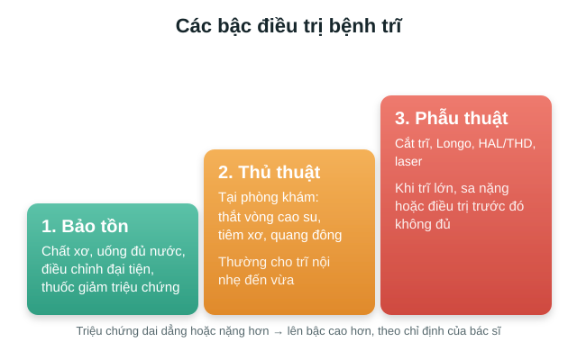

Tóm tắt nhanh
- Bệnh trĩ là khi các đệm mạch máu bình thường ở hậu môn phì đại hoặc sa xuống và gây triệu chứng.
- Dấu hiệu thường gặp: chảy máu đỏ tươi khi đi ngoài, sa búi trĩ, ngứa hoặc khó chịu ở hậu môn.
- Nền tảng điều trị là chất xơ, đủ nước, không rặn, không ngồi lâu; thủ thuật hoặc phẫu thuật chỉ khi cần.
- Không tự kết luận mọi trường hợp ra máu là trĩ; đi khám khi chảy máu mới xuất hiện hoặc tái diễn.
Đi ngoài ra máu đỏ tươi, ngứa rát hay thấy một khối nhỏ ở hậu môn khiến nhiều người nghĩ ngay đến bệnh trĩ. Trĩ rất thường gặp và đa số trường hợp có thể kiểm soát được. Tuy vậy, không phải mọi trường hợp chảy máu hay có khối ở hậu môn đều là trĩ.
Bài viết này giải thích bệnh trĩ là gì, vì sao xuất hiện, các dấu hiệu thường gặp và hướng điều trị hiện nay, để bạn biết khi nào có thể tự chăm sóc và khi nào cần đi khám.
Bệnh trĩ là gì?
Ở người bình thường, ống hậu môn có những đệm mô mềm chứa mạch máu, cơ trơn và mô liên kết. Các đệm này giúp đóng kín ống hậu môn và góp phần kiểm soát đại tiện. Khi các đệm này bị thay đổi, phì đại hoặc sa xuống, gây ra triệu chứng như chảy máu đỏ tươi, sa búi trĩ, ngứa hoặc khó chịu thì gọi là bệnh trĩ.
Nói cách khác, đệm hậu môn là cấu trúc bình thường ai cũng có; chỉ khi chúng gây triệu chứng mới là bệnh.
Nguyên nhân và yếu tố nguy cơ
Bệnh trĩ thường do nhiều yếu tố phối hợp, không có một nguyên nhân đơn độc. Những yếu tố có thể làm tăng nguy cơ hoặc làm nặng thêm triệu chứng gồm:
- Táo bón, phân cứng, phải rặn nhiều khi đại tiện
- Ngồi lâu trong nhà vệ sinh, kể cả vừa ngồi vừa dùng điện thoại
- Chế độ ăn ít chất xơ, ít uống nước, ít vận động
- Mang thai và sau sinh
- Thừa cân, béo phì
- Tuổi cao, tiêu chảy kéo dài, mang vác vật nặng thường xuyên
Triệu chứng thường gặp
Chảy máu đỏ tươi khi đại tiện, sa búi trĩ, ngứa và kích ứng quanh hậu môn là những biểu hiện thường gặp.
- Chảy máu đỏ tươi khi đi ngoài: máu dính trên giấy vệ sinh, nhỏ giọt hoặc phủ ngoài phân
- Sa búi trĩ: có thể tự co lên, hoặc cần dùng tay đẩy hoặc nằm thường xuyên bên ngoài
- Ngứa, ẩm ướt, cảm giác vướng hoặc khó chịu ở hậu môn
- Đau: trĩ nội không biến chứng thường ít đau; trĩ ngoại có thể đau rõ khi bị tắc mạch
Chi tiết hơn về các dấu hiệu và khi nào cần khám sớm có ở Bài 2.
Phân loại bệnh trĩ
Trĩ nội nằm phía trên đường lược; trĩ ngoại nằm phía dưới đường lược; trĩ hỗn hợp có cả hai thành phần. Phân biệt vị trí rất quan trọng, vì thắt vòng cao su chủ yếu điều trị trĩ nội và không dùng để xử lý đầy đủ búi trĩ ngoại lớn.
Xem thêm: phân biệt trĩ nội, trĩ ngoại và trĩ hỗn hợp và phân độ trĩ Goligher I–IV.
Chẩn đoán
Bác sĩ hỏi về thời điểm và lượng máu, triệu chứng sa hay đau, táo bón, thuốc đang dùng và các yếu tố nguy cơ. Việc khám có thể gồm quan sát hậu môn, thăm trực tràng và soi hậu môn. Nội soi đại trực tràng được cân nhắc theo tuổi, nguy cơ, dấu hiệu cảnh báo và chương trình tầm soát.
Điều trị
Điều trị tùy loại trĩ, triệu chứng và mức độ sa. Nền tảng là tăng chất xơ, uống đủ nước phù hợp, tránh rặn và không ngồi lâu khi đại tiện. Thuốc bôi hoặc đặt có thể giảm triệu chứng trong thời gian ngắn nhưng không làm biến mất búi trĩ sa lớn. Khi cần, bác sĩ có thể cân nhắc thắt vòng, tiêm xơ, quang đông hoặc phẫu thuật theo chỉ định.

Triệu chứng nhẹ có thể cải thiện khi điều chỉnh lối sống, nhưng búi trĩ sa do thay đổi cấu trúc thường không tự biến mất hoàn toàn. Không phải ai mắc trĩ cũng cần mổ: nhiều trường hợp đáp ứng điều trị bảo tồn hoặc thủ thuật.
Đọc thêm: điều trị bệnh trĩ tại nhà và các phương pháp thủ thuật, Longo, laser và phẫu thuật.
Khi nào cần đi khám?
Hãy đi khám khi chảy máu mới xuất hiện hoặc tái diễn, sa búi trĩ, đau nhiều, khối sưng tím hoặc triệu chứng không cải thiện.
- Chảy máu nhiều kèm choáng, ngất
- Đau dữ dội hoặc sốt
Lưu ý: trĩ không chuyển thành ung thư, nhưng ung thư đại trực tràng có thể gây chảy máu tương tự. Vì vậy không tự kết luận mọi trường hợp ra máu là do trĩ.
Câu hỏi thường gặp
Bệnh trĩ có tự khỏi không?
Triệu chứng nhẹ có thể cải thiện, nhưng búi trĩ sa do thay đổi cấu trúc thường không tự biến mất hoàn toàn.
Bệnh trĩ có gây ung thư không?
Trĩ không chuyển thành ung thư, nhưng ung thư đại trực tràng có thể gây chảy máu tương tự.
Ai mắc trĩ cũng cần mổ không?
Không. Nhiều trường hợp đáp ứng điều trị bảo tồn hoặc thủ thuật.
Tài liệu tham khảo
- Qureshi W, et al. AGA Clinical Practice Update on Diagnosis and Treatment of Hemorrhoids: Expert Review. Clinical Gastroenterology and Hepatology. 2026;24(7):1773–1781. doi:10.1016/j.cgh.2026.04.008.
- Hawkins AT, et al. The American Society of Colon and Rectal Surgeons Clinical Practice Guidelines for the Management of Hemorrhoids. Diseases of the Colon & Rectum. 2024;67(5):614–623. doi:10.1097/DCR.0000000000003276.
- SIUCP Guidelines for the management of acute and chronic hemorrhoidal disease. Annals of Coloproctology. 2024;40(4):287–320. doi:10.3393/ac.2023.00871.0124.
Miễn trừ trách nhiệm: Bài viết cung cấp thông tin giáo dục sức khỏe, không thay thế khám, chẩn đoán hoặc chỉ định điều trị của bác sĩ. Không tự ý dùng, ngừng hay đổi liều thuốc. Khi có dấu hiệu nguy hiểm, gọi 115. Đọc đầy đủ.